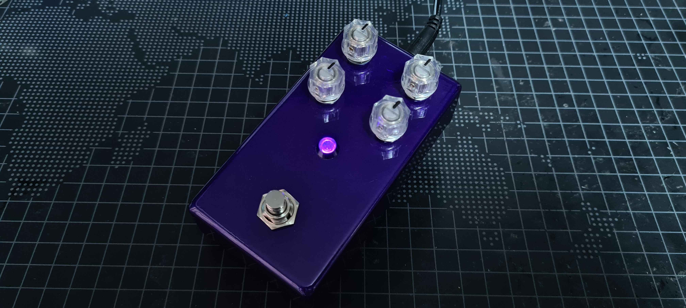
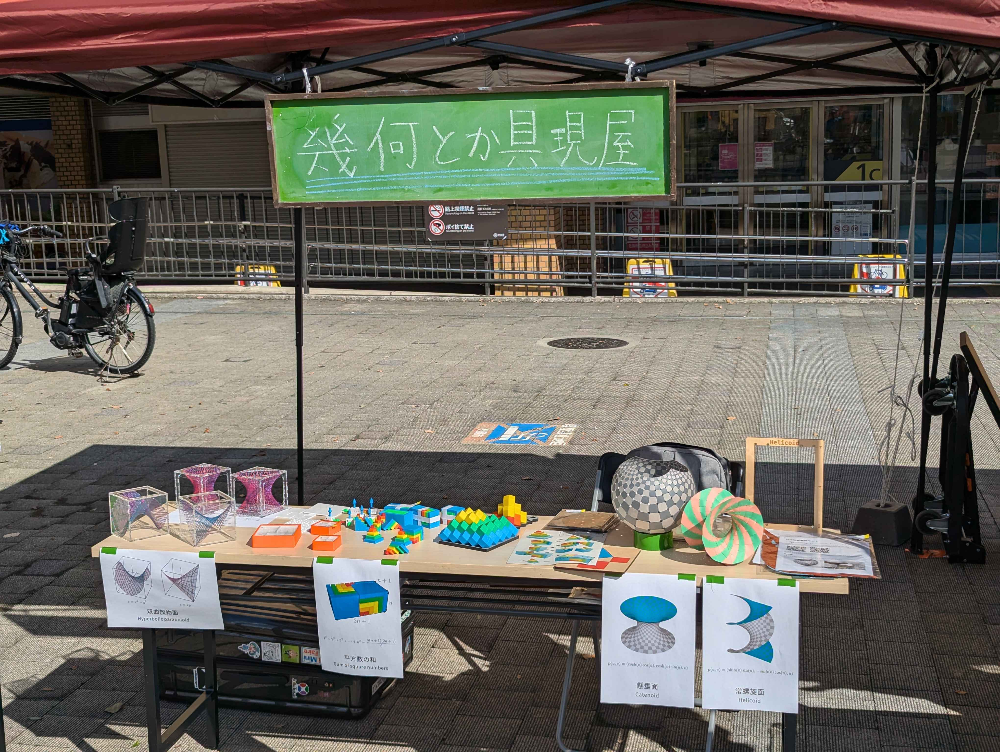

展示物一覧
エフェクター
良い音工房 Good Sound HP
良い音工房 Good Sound Xアカウント
趣味で自作・販売しているエフェクターとその基板を展示します。
エフェクターの自作って簡単やねんで、ってことを伝えられれば嬉しいです🎸
オムライスにケチャップでハートを描く装置

オムライスにケチャップをかけるために開発された装置です。
10月にMaker Faire Tokyo 2025で展示した作品です。
数学模型
元Twitter（現自称X）アカウント：@Hyrodium
YouTube：@Hyrodium
Booth：@Hyrodium
GitHub：@Hyrodium
個人サイト：hyrodium.github.io
数学、とくに幾何学周辺の模型を展示します
ステッピングモータの楽器

2016年ぐらいの家庭用の3Dプリンタの黎明期に買ったAnet A8を分解して出てきたステッピングモータを使って楽器を作ってみました。 基本的にはメカの駆動音を利用しているので重低音を楽しむことが出来るのが特徴です。3Dプリンタの動作するときの音と音が鳴る原理は同じです。回転速度を音階にあわせて、モータを複数並べて和音を作り楽器にしています。 普段はNT京都やNT加賀等のニコニコ技術部から派生したNT系のイベントや大垣のミニメイカーフェアに出展しています。